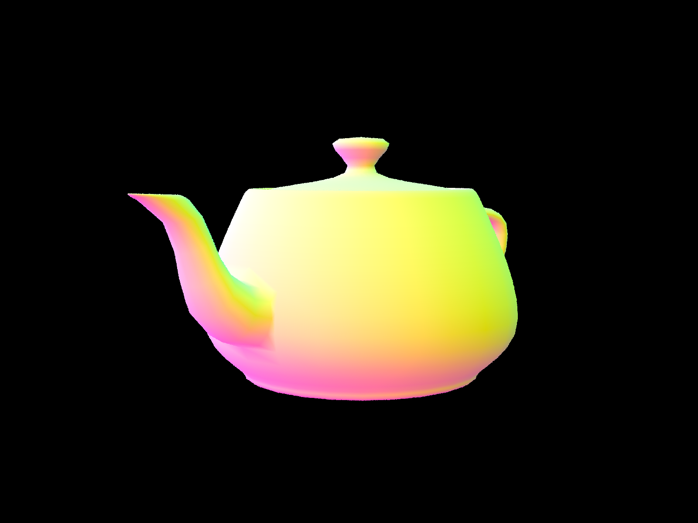
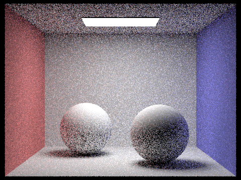

In animated films, video game visuals, and simulated environments, light in scenes bring visuals to the next level. To simulate light, ray tracing is used as a common practice in which rays are extended into a scene and are traced via light bounces towards sources of light to approximate the color of the objects and primitives in the scene. For project 3-1, we implemented the core routines of a physically-based renderer using a pathtracing algorithm. Throughout the project, we broke our projects into the followings parts: (1) Ray Generation and Scene Intersection, (2) Bounding Volume Hierarchy (BVH), (3) Direct Illumination, (4) Global Illumination, and (5) Adaptive Sampling. As a result, we created a way to properly render 3-D environments with estimated real-world lighting through ray tracing in an efficient and realistic manner.
Efficiency proved to be one of the more difficult parts to this project. With ray generation and illuminance computations at every ray-surface intersection, this project was computationally heavy and took a significant amount of time to render scenes. Thankfully, with the help of optimization methods learned in lecture such as configuring geometry through the Bounding Volume Hierarchy (BVH). While testing, we also discovered the dependent relation between how pixelated/grainy (variance) our output was and the rendering time (amount of samples) for the output.
This was a fairly heavy project in which we struggled with everything from unfamiliarity with C++ (i.e. not understanding std::partition), segfaults, and understanding how to properly test renders quickly and effectively using the given tools in the GUI and rendering options in the spec.

For the first task we needed to generate the camera rays. To do so we first need to convert from image space to camera space, with the following formula
sensorX = (x - 0.5) * 2 * tan(hFov / 2 / 180 * PI);If we break down the formula, the x - 0.5 and y - 0.5 is because (0.5, 0.5) is at the center of the image and our transformation is relative to it. In other words, the (0.5,0.5) gets transformed to the point through which the z axis intersects at (0,0,-1). The bottom left corner transforms from (0,0) to (-tan(hFov/2), -tan(vFov/2), -1), which means that the (x,y) point transforms to In other words, the (0.5,0.5) gets transformed to the point through which the z axis intersects at (0,0,-1). The bottom left corner transforms from (0,0) to (-tan(hFov/2), -tan(vFov/2), -1), which means that the (x,y) point transforms scaled by the tangent term. Finally we have to convert into radians. After we find the sensor transformed coordinates in the camera space we also need to find the ray, which goes from the camera origin to the sensor point, and we can do this by defining a 3D vector and calling in the sensor coordinates as parameters. However, we then need to convert into world space, which involves creating a new Ray object with origin set as pos (the current camera position) and direction set as the ray we found multiplied by the camera to world transformation matrix. After that we simply set the clipping bounds.
The next task was sampling the radiance of pixels with integration. To do so we generate ns_aa random rays using the function for generating rays that we just implemented. We loop over the range of ns_aa, the number of samples we need to take. Then we get the sample rate and the dimensions of the samplebuffer to sample. Over each sample, we estimate the radiance along that ray with PathTracer::est_radiance_global_illumination and add it to a running sum total, which we then average after the loop. Then we update the sample buffer and set the value at the relevant index to the estimate. We update the sampleBufferCount as well, to be the number of samples
Task 3 is about Ray-Triangle Intersection. This involves two functions -- has_intersection and intersect. In has_intersection we need to return whether an intersection exists between a triangle and input ray and this involves finding t, the time of intersection, and checking if it's valid -- meaning, it's within the right bounds. To find t, we run Moller Trumbore Algorithm discussed in lecture, which allows us to calculate t and the barycentric coordinates. We need the barycentric coordinates because we need to interpolate the surface normal using the three vertex normals of the triangle, n1, n2, and n3 -- which we set as the barycentric coordinates. Once we've found those and t, we simply check that t is at least 0 (since a negative time would imply no intersection) and that the barycentric coordinates are bounded within 0 and 1. If that holds, there's an intersection. The intersect function reports the nearest intersection point t. It does the same assignments and checks as the has_intersect function, but also assigns the max_t in the ray to the t and sets the structure isect parameters to hold the t value, the bsdf and the interpolated surface normal
In Task 4, we followed similar steps to our Ray-Triangle Intersection, but for Ray-Sphere Intersections. By using the ray equation o+td, we set it to the surface we are intersecting to calculate if an intersection exists and find the intersection to trace if so. We checked to find whether the sphere is intersected 0, 1, or 2 times using the quadratic formula.
|
Example of CBSpheres_Lambertian |
Example of an empty output |
Example of Cow.dae
The Bounding Volume Hierarchy technique, or more notably known as BVH, is often used during raytracing as a way to accelerate and optimize the raytracing process. This process breaks down the number of ray-intersection calculations by creating a bounding box for each primitive shape. In simple words, BVH is a form of object partitioning using a tree-like structure. When a ray intersects the bounding box of a BVHNode, we need to proceed with ray-intersection calculations for the primitives within the bounding box.
To construct the BVH, we begin by assembling the BVHNode tree. Using the given start iterator of primitives, we calculated the bounding box for each primitive while also updating our bounding box BBox to each primitive's bounding box as we iterated. With our BBox value, we create a new bounding box as a BVHNode.
Then, using our split value, max_leaf_size, we checked to see if the amount of primitives in this new bounding box is less than or equal to the max_leaf_size (maximum number of primitives) that we can have. If this conditional holds true, we add it directly to our tree as a new child node. Otherwise, we continue by recursively constructing the tree using a heuristic. Our heuristic was based on dividing the bounding box in half in which we referenced the largest axis on the centroid bounding box.
With C++'s std::partition function, we divided the primitives into left and right nodes by calculating each primitive's centroid. Based on the split point, if the primitive's centroid is located to the left, it's partitioned onto the left side, and otherwise, it's partitioned to the right side. Since we partitioned using the existing iterator, in the case that either the left or right side is empty, our end iterator ensures there exists at least one primitive.
After implementing the BVH acceleration structure, our rendering times increased significantly.
To understand and visualize this, we compared the render times of various inputs with and without our BVH implementation.
Two inputs that we referenced for our runtime tests were maxplank.dae and beast.dae. Without using the BVH acceleration structure, the beast.dae took about 17 minutes and 54 seconds to render. With BVH, beast.dae was able to render in 1.26 seconds. Meanwhile, the maxplank.dae took about 16 minutes and 23 seconds to render without BVH. Once BVH was implemented, this time was reduced to 1.17 seconds. To generalize and break this down, the BVH structure allows us to significantly reduce our runtime from a linear model to a logrithmic one based on the amount of primitives present. Bounding boxes are extremely effective and the BVH structure is often used today to help speed up rendering times. The use of bounding boxes allow us to identify which primitives have intersections and thus ignore primitives that are not within the bounding box.
During this process, we struggled with various bugs in our initial implementation.
start iterator and added the respective primitives which we then created into an iterator and called recursively. However, this created segfault issues and memory leaks as the vectors we had created weren't persistent in memory. std::partition function as we both aren't very familiar with C++, and learned how this function partitions within an iterator

BVH Example initial view |

Dividing the bounding box in half |

Dividing into smaller sections |

Bounding Box sections each primitive |
Example outputs provided below!
|
Example of Max Plank, many triangles |

Example of teapot |

Example of beast, also many triangles! |
Example of cow |
Example of CBbunny.dae with uniform sampling
In our direct lighting implementations, we are given a ray and intersection where we want to compute the resulting outgoing radiance based on the sum of all the ray intersections created.
With uniform hemisphere sampling, we iterate uniformly usingnum_samples. In each iteration, we retrieve a sample of the unit hemisphere given by hemisphereSampler->get_sample(). Since these coordinates are in object space, we first convert them to world coordinates. We proceed by creating an incoming ray using the sample and hit point hit_p. If the ray intersects our BVH, we can use the light emission on the material as the incoming radiance from a single direction. To add this to the radiance at this point, we multiply by the cosine term and BSDF. Additionally, because we are creating a monte carlo estimate, we divide by the PDF, 1/2*pi and return the result of the sum of samples averaged by the number of samples.
Contrastingly, in direct lighting using importance sampling of lights, we iterate over the list of lights found in scene->lights. If the light identifies as a delta light, meaning the light is a light source,we only proceed with 1 sample.
For all other lights, we sample ns_area_light times. Using an inner loop, we iterate for each sample count, generating a sample with sample_l, creating an incoming radiance, and checking if an intersection between the ray and BVH does not exist. If an intersection occurs, we accumulate the irradiation, similar to our technique used in uniform hemisphere sampling, dividing by the number of samples. We continue this for each light and output the result for all lights in the scene.
Below are two examples of uniform hemisphere sampling versus lighting (importance) sampling. Though both methods use the same amount of light and samples, they produce two very varied results. In uniform hemisphere sampling, because we are sampling uniformly in the directions around all points, the output results in a much more grainy view. As we uniformly sample, we only sample the rays that are pointed towards a light's direction. Meanwhile, importance sampling directly iterates over all the lights, allowing us to trace the direction and ensure less randomness/granularity. This produces a much cleaner output as you can observe below.
|
CBcoil.dae rendered using Uniform Sampling |
CBcoil.dae rendered using Importance Sampling |
|
CBbunny.dae rendered using Uniform Sampling |
CBbunny.dae rendered using Importance Sampling |
Below is an example of CBspheres_lambertian.dae with 1 sample per pixel and 1, 4, 16, and 64 light rays. As we increase light rays, you can observe the difference in noise as we increase light rays. With 16 rays, you can see a key difference between the outputs. Similar to samples, adding more information into the scene allows us to have more complexity despite a low amount of samples.
|
1 sample and 1 light ray |
1 sample and 4 light rays |
|
1 sample and 16 light rays |
1 sample and 64 light rays |
Example of Bunny using global illumination
Direct lighting as seen in part 3 creates nice images using one bounce of light that terminates at the first point of intersection in a scene. To create a realistic effect, global illumination, much like the real world, bounces off of multiple surfaces and can contribute to their lighting and incoming radiance.
Building off of our direct illumination implementation, indirect illumination helps bring light to a scene by accounting for more bounces of light in a scene. Because these bounces are accounted for after the first initial or "direct" light, we call them indirect lighting.
To implement our indirect illumination, we began by first calculating our "zero bounce" which is the light emitted directly from the light source. Then, we calculate our "one bounce" or direct illumination using the methods created in Part 3. From there, we create a recursive function that follow steps similar to part 3 in which we sample from the BSDF, calculate a cosine term using the direction given from our sample, and covert those values to world coordinates. Using this information, we create a new ray for the next bounce based on the hit point and the direction of our sample.
If there are more bounces (next bounce's depth > 1), our cosine term is positive, and the next bounce has an intersection point, we recursively call the next indirect lighting bounce and accumulate the radiances into L_out. As we continue bouncing, we decrement from the depth for each recursive call to account for the max_ray_depth. We scale L_out similar to Part 3 using the BSDF sample, cosine term, and pdf. When the current ray has a valid ray depth to bounce, we use Russian Roulette to randomly exit indirect illumination. Using the coin_flip() function, we have a termination probability of 0.35 and a continuation probability of 0.65.
The table below demonstrates CBspheres_lambertian.dae rendered in direct, indirect, and global illumination with 8 threads, 1024 samples, 16 light rays, and 5 max depth settings. In the direct lighting which we compeleted in Part 3, we can see how the lighting remains concentrated in certain areas. Meanwhile, in the indirect lighting implementation's output, the lighting is much more gradient and spread across the output. Combining these together, we create a global illumination output of the spheres, making the scene look realistic and flattering.
|
CBspheres_lambertian in direct lighting |
CBspheres_lambertian in indirect lighting |
CBSpheres_lambertian with global (direct and indirect) lighting
The table below demonstrates CBbunny.dae rendered in 5 different views with the ray_depth set to 0, 1, 2, 3, and 100. 1024 samples per pixel were used for each output. For the first 2 outputs of depth 0 and 1, the output is as expected
similar to the ouputs we had in Part 3. When the depth is 0, only the light source is being emitted. When the light source is 1, we have one bounce, and thus, the output should be similar to what we had in Part 3 using direct lighting and importance sampling.
However, as we increase our maximum ray depth, light spreads more and there are less areas concentrated with darkness in our outputs. For example, as we proceed to m=2, we can observe the lighting on the ceiling which we did not have before as well as more light scattering. One key difference to notice is the colors casted onto the ball from the walls. There are specks of red and blue that have bounced off of the reflection of the walls onto the balls.
One thing to note is that due to the randomization of our russian roulette implementation, the differences between render times for higher ray depths don't vary too significantly as we terminate randomly.
|
Depth = 0 |
Depth = 1 |
|
Depth = 2 |
Depth = 3 |
Depth = 100
The table below demonstrates CBSpheres_lambertian.dae rendered in 7 different views with the sampling rate set to 1, 2, 4, 8, 16, 64, and 1024 using 4 light rays and max ray depth of 5. As we increase the sampling rate, the graininess and variance of our output decreases. However, along with this, comes increased rendering times. While 1 pixel sampling had an average speed of < 1 minute, the 1024 pixel sampling had an average speed of ~10-15minutes for rendering time.
|
Depth = 0 |
1 Sample |
|

2 Samples |
8 Samples |

16 Samples |
64 Samples |
1024 Samples
Example of CBbunny.dae with uniform sampling
From part 4, we successfully created some beautiful, realistic renders! However, there seems to be a lot of noise in our outputs so far. On one hand, we can increase the numbers of samples to eliminate this issue. However, as we saw in our earlier projects higher sampling rates are more costly. To simplify this, we can simple sample some pixels at a lower rate as some converge faster than others. We use adaptive sampling to implement this process.
Adaptive sampling focuses on sampling areas with more noise at higher rates. In our implementation, we altered our raytrace_pixel function with a few simple changes. Formerly, we used num_samples to uniformly sample each pixel. Instead of keeping the sampling value as num_samples continuously, we check to see if the pixel has converged for every 32 samples using samplesPerBatch.
To check for convergence, we get the mean μ and standard deviation σ to find I:
.I = 1.96 ⋅ σ/sqrt(n)
To calculate σ and μ, we first need to calculate s1 and s2. For each ray casted, we calculate the radiance and add it to the sum of our variable s1. Similarly, for s2, we consecutively add the radiance squared to the sum. This process can be represented using the following summations:

Once found, σ and μ are calculated via:

If I <= maxTolerance * μ, then the pixel has converged and we can stop sampling and break from the loop. In other words, when there is a low variance, this demonstrates that a pixel has created enough samples to converge. Afterwards, to account for this change, our update_pixel() and sampleCountBuffer at that respective pixel is set to the number of samples used instead of num_samples as formerly defaulted. When creating our filename_rate.png output for the sampling rate, the sampleCountBuffer is used in which higher sampling rate values stored are red and lower sampling rates are indicated using blue.
Our maxTolerance is given as 0.5.
|
Spheres output |
Spheres sampling rate with 1024 samples |
Bunny rendered using
-t 8 -s 2048 -a 64 0.05 -l 1 -m 5 -r 480 360
(2048 samples, 1 light ray, 5 max depth)
|
Bunny output |
Bunny sampling rate with 2048 samples |
We also observed a few errors! Due to our initial implementation using num_samples as the divisor still, our outputs came out as the following and were much darker. We also had issues using a for-loop implementation at first, so we switched to a do-while to ensure we were correctly counting the number of current samples taken.
|
Error output |
Error sampling rate |
Team MaAshed Potatoes :)
Project 3-1 was definitely a challenging one. This project relied heavily on a variety of lectures, specifically lectures 9-13.
Throughout this project, we worked together collaboratively. Initially, we split the work on parts 1 and 2 amongst ourselves with Manaal working on the majority of part 1 and Ashley working on the majority of part 2. For parts 3-5, we pair programmed together, with oftentimes one person pseudocoding and noting the conceptual steps needed while the other manually coded. We had issues with setting up the project on one of our personal computers, so we also code shared via IntelliJ's "Code With Me" feature on CLion to work at the same time. Throughout the project timeline, we also attended office hours frequently and consistently. When one of us could not attend, the others would report back with updates, or we would zoom each other online, so both of us could be present. While this project was quite a bit frustrating as we faced bugs at almost every part, we were able to communicate quickly and effectively, and solves bugs within a day or two. This project really helped solidify our understanding of rays, illumination, and BSDF.
To view this as a website, please visit: https://ashchu.github.io/cs184proj3-1